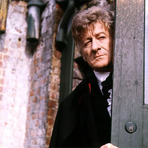

|
|||||||||||||
|
The Third DoctorPortrayed by Jon Pertwee The Third Doctor is the third incarnation of the protagonist of the long-running BBC television science fiction series Doctor Who. He was portrayed by actor Jon Pertwee. Within the series' narrative, the Doctor is a centuries-old Time Lord alien from the planet Gallifrey who travels in time and space in his TARDIS, frequently with companions. When the Doctor is critically injured, his body can regenerate; as a result, his physical appearance and personality change. Pertwee portrays the third such incarnation, a dapper man of action of stark contrast to his wily but less action-oriented predecessors. While previous Doctors' stories had all involved time and space travel, for production reasons Pertwee's stories initially depicted the Doctor stranded on Earth, where he worked as a scientific advisor to the supernatural paramilitary group UNIT. His adventures often fitted into the spy-fi genre which had been popularised by The Avengers the decade prior. Within the story, the Third Doctor came into existence as part of a punishment from his own race, the Time Lords, who forced him to regenerate and also disabled his TARDIS. Eventually, this restriction is lifted and the Third Doctor embarks on more traditional time travel and space exploration stories. The Third Doctor was a suave, dapper, technologically oriented, and authoritative man of action who practised Venusian Aikido (or Karate). A keen scientist, he maintained a laboratory at UNIT where he enjoyed working on gadgets in his TARDIS. In his spare time, he was fond of motoring, handing all manner of vehicles. His favourite car was a canary-yellow vintage roadster that he nicknamed "Bessie," a construct which featured such modifications as a remote control, dramatically increased speed capabilities, and inertial dampeners. He also maintained a hovercraft-like vessel that fans nicknamed the Whomobile. The First Doctor, upon meeting the Third, described him indignantly as a "dandy", while the Second Doctor, with whom the Third had something of an antagonistic relationship on the occasions they encountered each other, referred to him as "Fancy Pants". |
||||||||||||